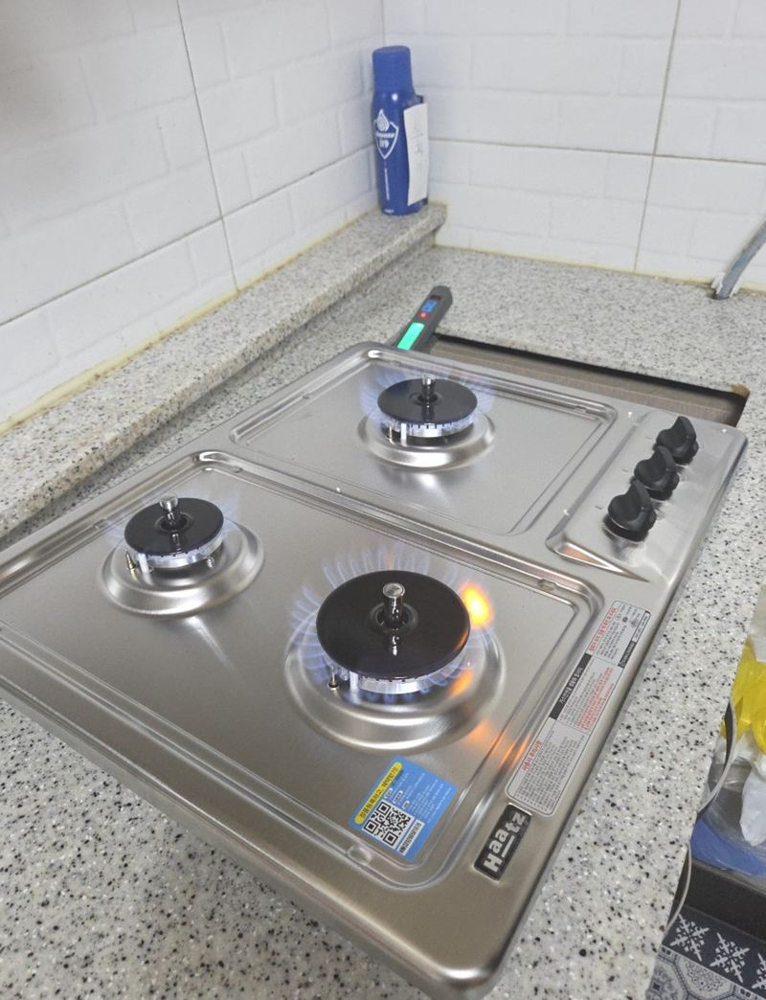
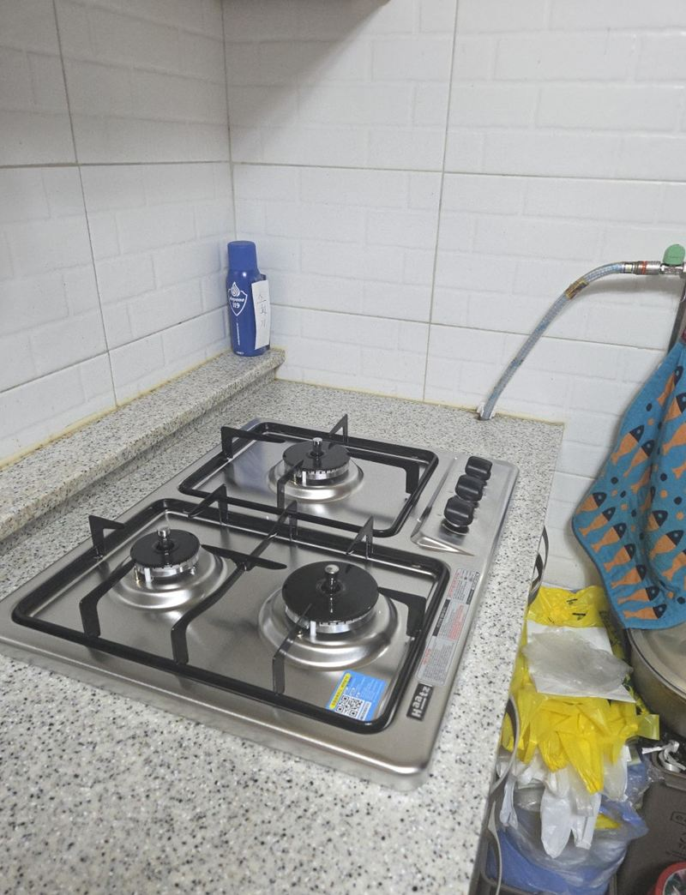
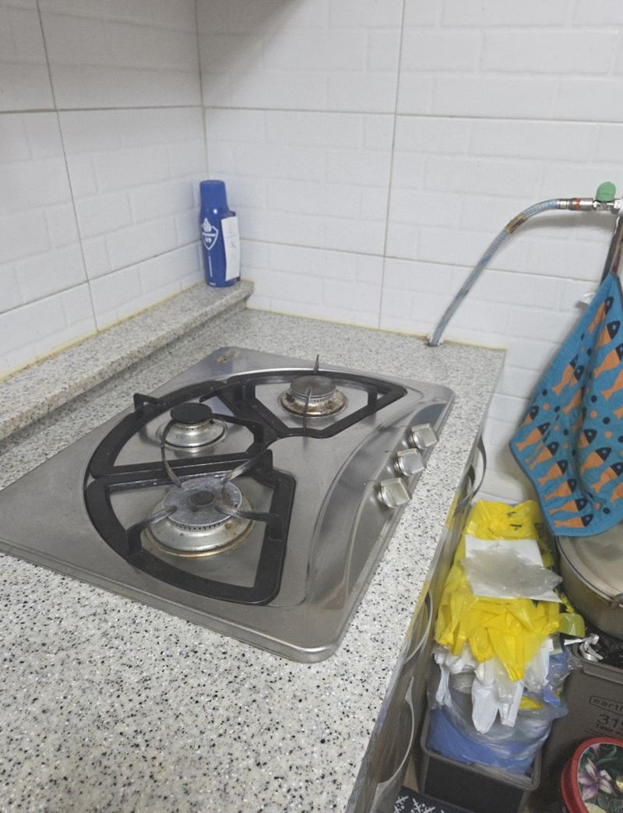
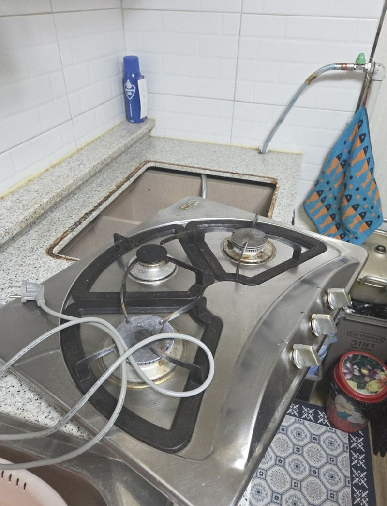
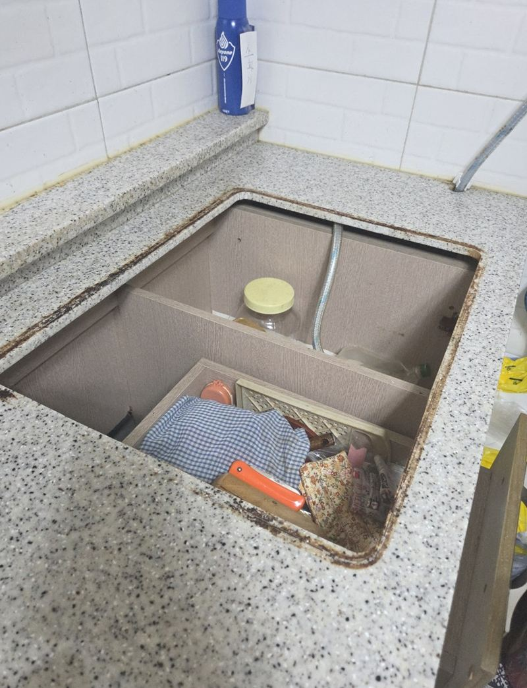
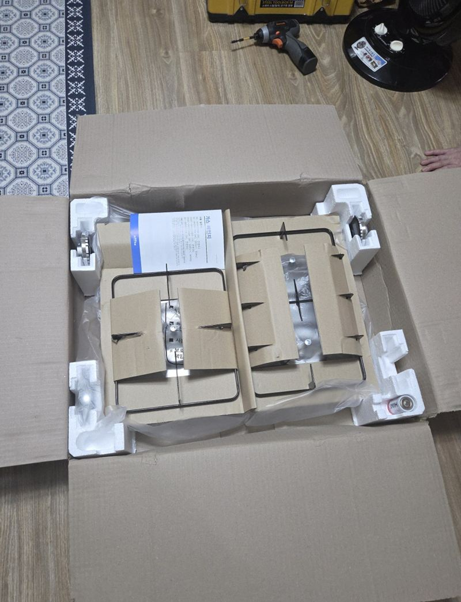
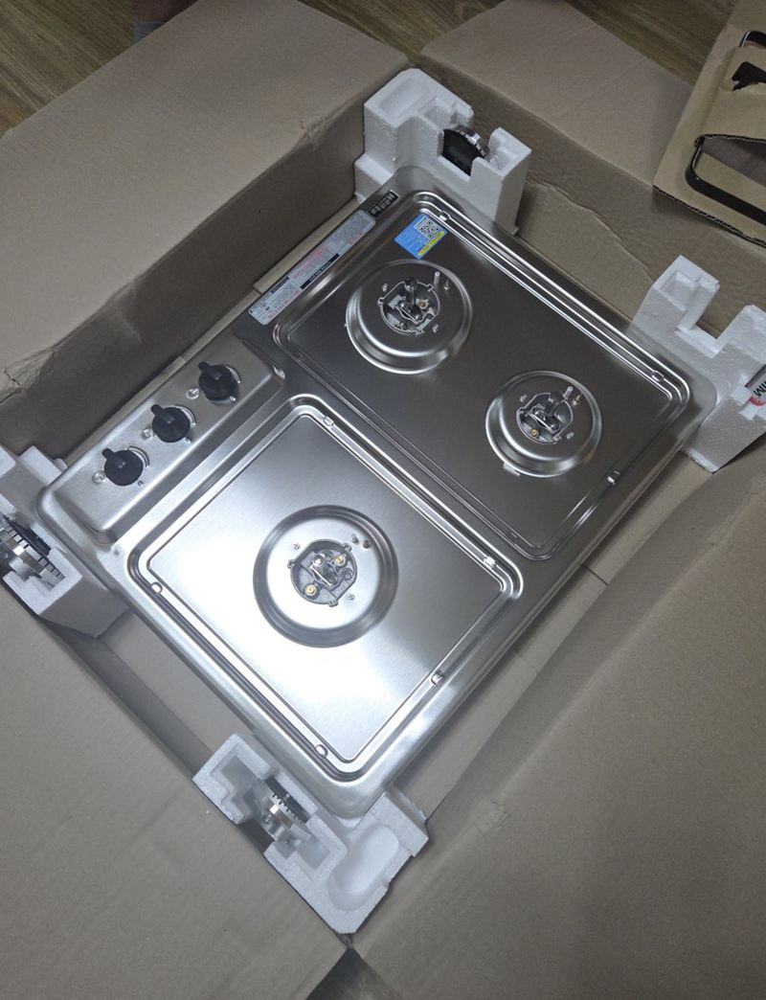

인천 미추홀 과열방지 가스레인지 교체 방법


교체 전교체 후← 밀어서 전후 비교 →
"엄마가 음식 올려 두고 깜빡해서 냄비를 태운 적이 몇 번 있어요." 인천 미추홀구 주안동 빌라에 사시는 어머님 댁을 위해 따님이 연락하셨어요. 가스레인지는 오래됐지만 고장은 아니었어요. 불은 잘 켜지는데, 냄비가 타도 스스로 꺼지는 기능이 없었어요. 가스 연결을 확인해 옛 레인지를 떼고 눌어붙은 기름때를 정리한 뒤, 같은 자리 규격의 과열 방지 모델을 앉혀 가스 누설과 점화를 차례로 확인했어요.
| 현장 | 인천 미추홀구 주안동 빌라 주방 |
|---|---|
| 이유 | 조리 중 불을 끄는 걸 잊는 일이 반복, 가족의 안전 걱정 |
| 한 일 | 상판 크기·가스 연결부 확인 → 옛 레인지 분리 → 기름때 정리 → 과열 방지 모델 설치·고정 → 가스 연결 → 누설 확인 → 화구별 점화 확인 → 폐제품 수거 |
| 바꾼 점 | 과열 방지 기능이 있는 가스레인지로 |
고장 안 난 가스레인지, 왜 바꿀까
오래된 가스레인지 중엔 화력은 멀쩡해도 과열 방지 기능이 없는 제품이 많아요. 젊은 사람에겐 문제가 안 돼도, 불을 켜 두고 잠깐 다른 일을 하다 잊기 쉬운 어르신 댁에선 위험해질 수 있어요. 고장 여부보다 쓰는 분의 생활 습관을 먼저 보는 게 맞아요.
과열 방지 기능은 냄비 바닥 온도가 너무 오르면 불을 스스로 줄이거나 꺼 줘요. 냄비가 타기 전에 멈춰서, 화재로 번질 위험을 크게 줄여요.


가스레인지 교체 순서
자리와 연결부 확인
새 제품이 들어갈 상판 구멍 크기와 가스 연결부 상태를 먼저 봤어요. 규격이 맞아야 무리 없이 앉고 고정돼요.
옛 레인지 분리
가스 밸브를 잠그고 연결을 확인한 뒤 조심스럽게 들어냈어요.


기름때 정리
오래 쓴 자리라 둘레에 기름때와 먼지가 쌓여 있었어요. 깨끗이 닦아야 새 제품이 한쪽으로 들뜨지 않고 상판에 딱 붙어요.
새 제품 설치
과열 방지 모델을 구멍에 맞춰 올리고 수평과 고정을 확인한 뒤 가스를 연결했어요. 조리 중 흔들리지 않는지도 봤어요.


교체 후 가스 쪽 확인
- 가스 누설연결부에 새는 곳이 없는지 먼저 확인했어요.
- 점화화구마다 불이 잘 붙고 고르게 타는지 봤어요.
- 밀착상판과 틈 없이 붙어 국물이 아래로 흘러들지 않는지 확인했어요.
가스 제품은 연결과 시험까지 끝나야 안심하고 쓸 수 있어요. 떼어 낸 옛 레인지는 현장에서 가져가 처리했어요. 따님은 "엄마가 깜빡할 때가 있어 걱정이었는데 조금 마음이 놓인다"고 하셨어요.
부모님 댁 주방에 같이 보면 좋은 것
가스레인지를 바꾸는 김에 가스 호스가 오래돼 딱딱해지지 않았는지, 밸브가 손에 잘 닿는 위치인지도 함께 봐 주세요. 후드가 약하면 연기가 차서 조리 중 불을 보기 어려워요. 불을 아예 안 쓰는 인덕션으로 바꾸는 것도 방법이지만, 냄비를 바꿔야 하고 익숙해지는 데 시간이 걸려 어르신은 과열 방지 가스레인지를 더 편해하시기도 해요.
교체 날 준비해 주시면 좋은 것
가스레인지 위와 주변에 올려 둔 냄비, 양념통을 치워 주시면 작업이 빨라요. 아래 하부장에 가스 밸브가 있다면 손이 닿게 앞쪽 물건도 잠시 빼 주세요. 교체가 끝나면 바로 불을 켜 보고 쓰시면 돼요.
과열 방지 가스레인지 질문
빌트인이 아니라 올려놓는 레인지도 있나요?
상판 위에 놓는 제품도 과열 방지 모델이 있어요. 지금 형태를 알려주세요.
가스 호스도 바꿔야 하나요?
오래돼 굳거나 갈라졌다면 함께 바꾸는 게 안전해요.
도시가스 회사를 불러야 하나요?
배관 공사가 아니라 제품 교체라면 연결과 누설 확인까지 함께 해요.
3구로 바꿀 수 있나요?
상판 구멍을 넓혀야 해서 대리석 절단이 필요해요.
인덕션과 뭐가 더 안전해요?
둘 다 안전 기능이 있어요. 쓰시는 분이 익숙한 쪽을 고르는 게 좋아요.
자녀가 대신 연락해도 되나요?
네, 이 현장처럼 따로 사는 자녀분이 연락하는 경우도 많아요.
다른 인덕션·가스레인지 현장
지금 가스레인지 윗면과 상판 구멍 크기를 알려주세요.
전화 상담 010-4517-9872